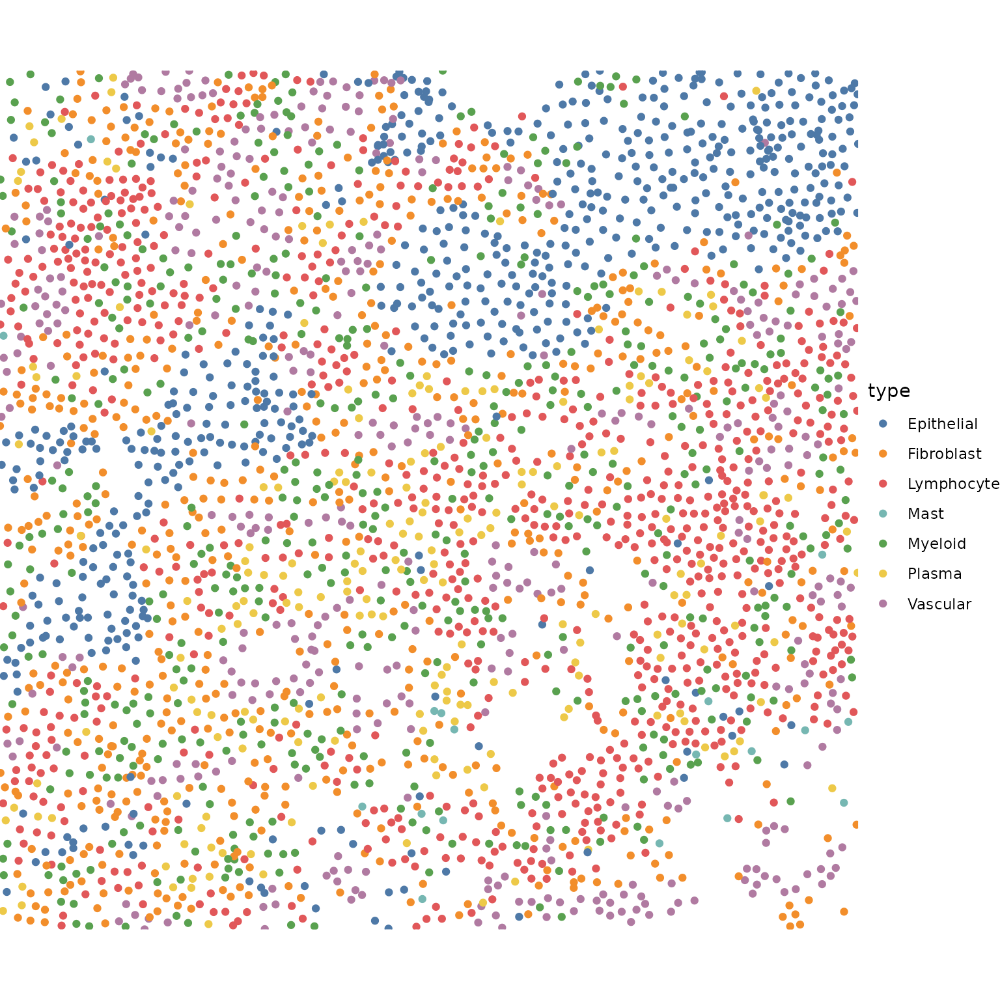
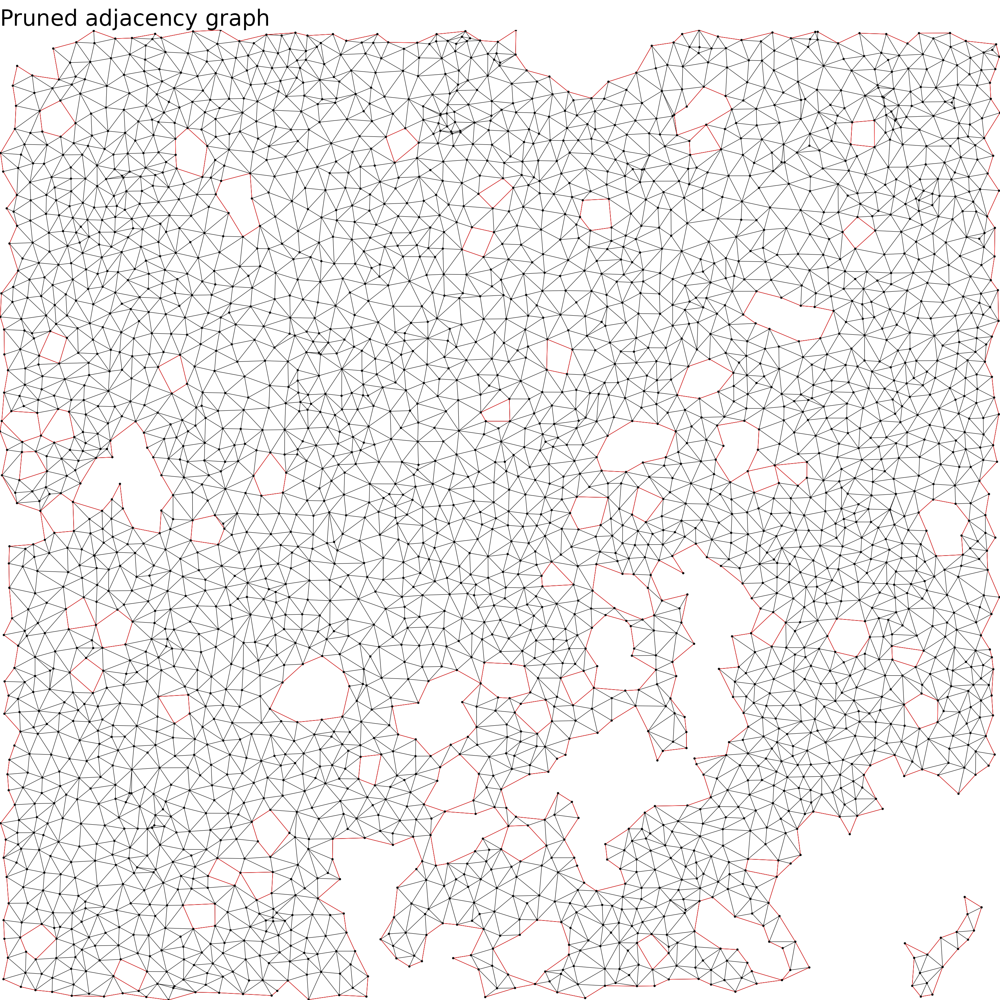
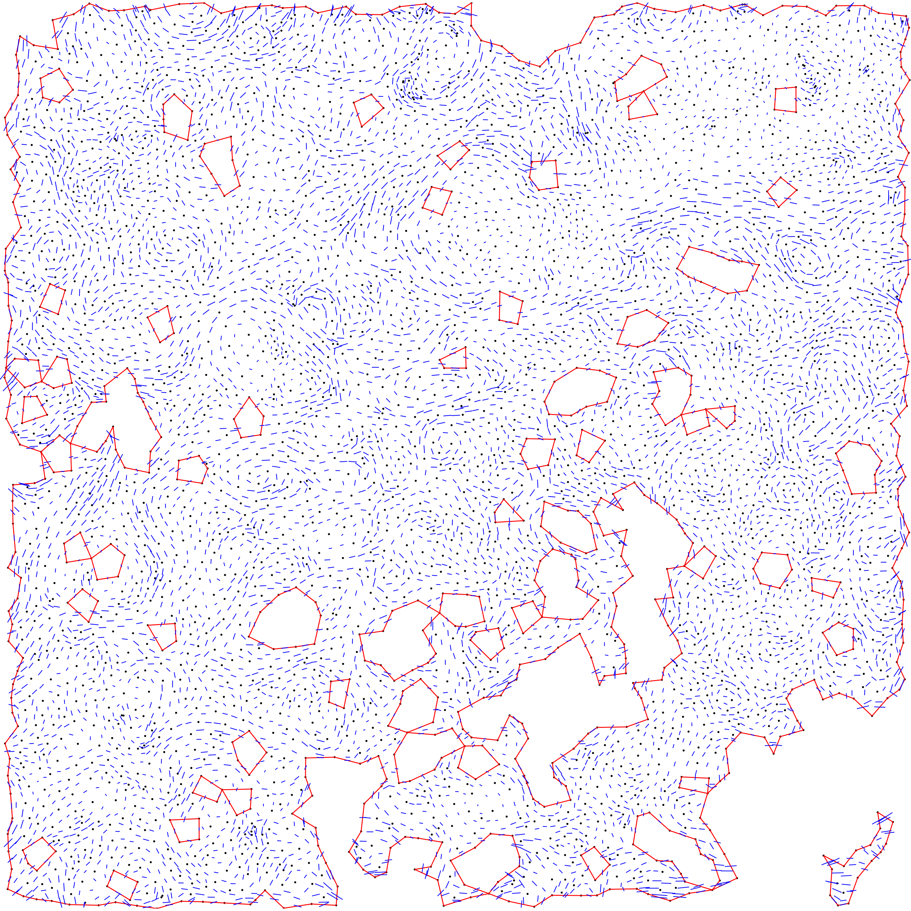
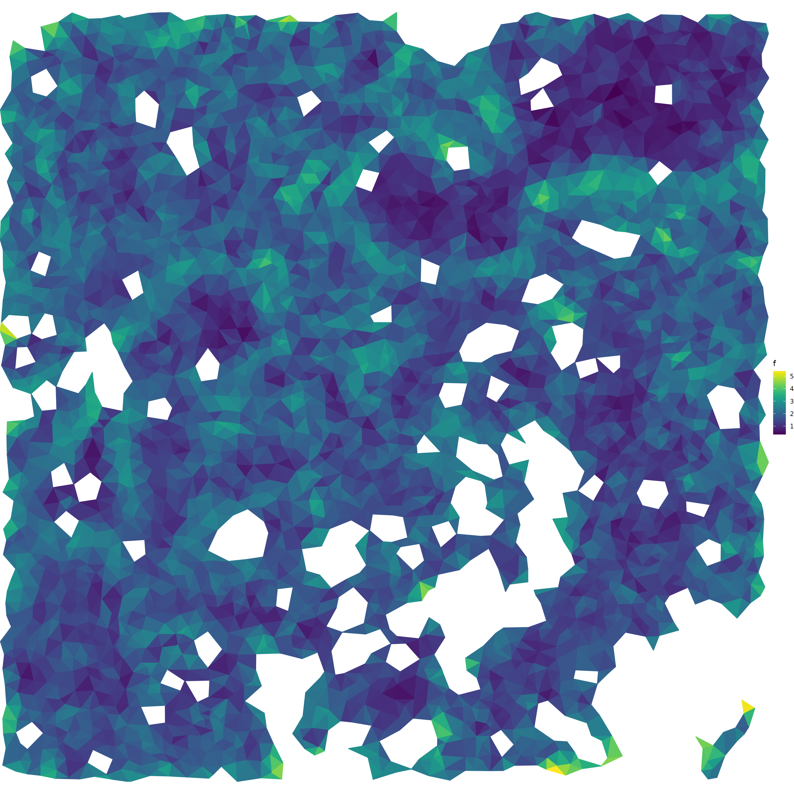
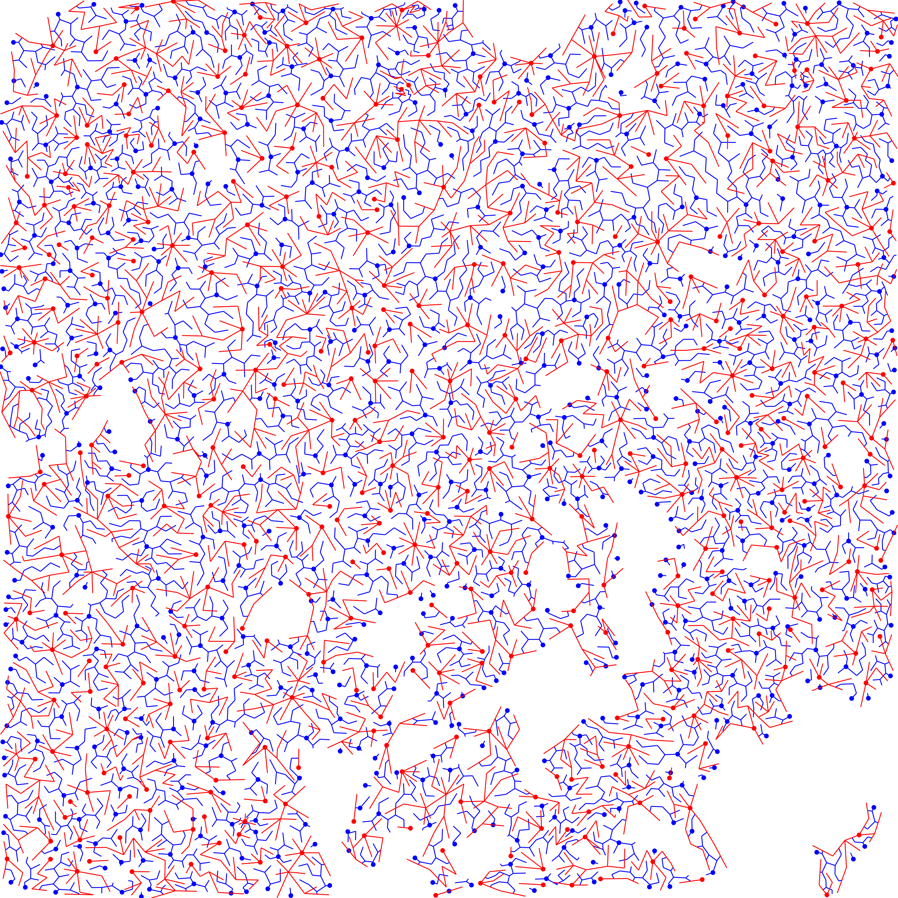
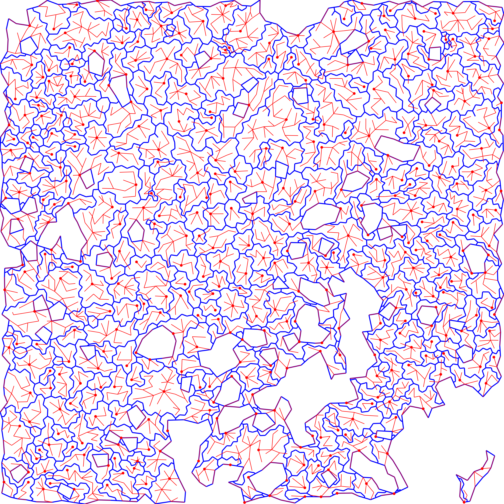
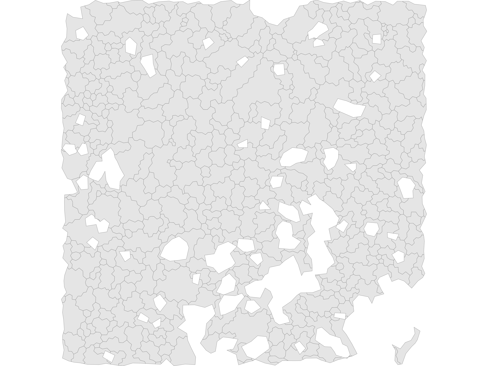
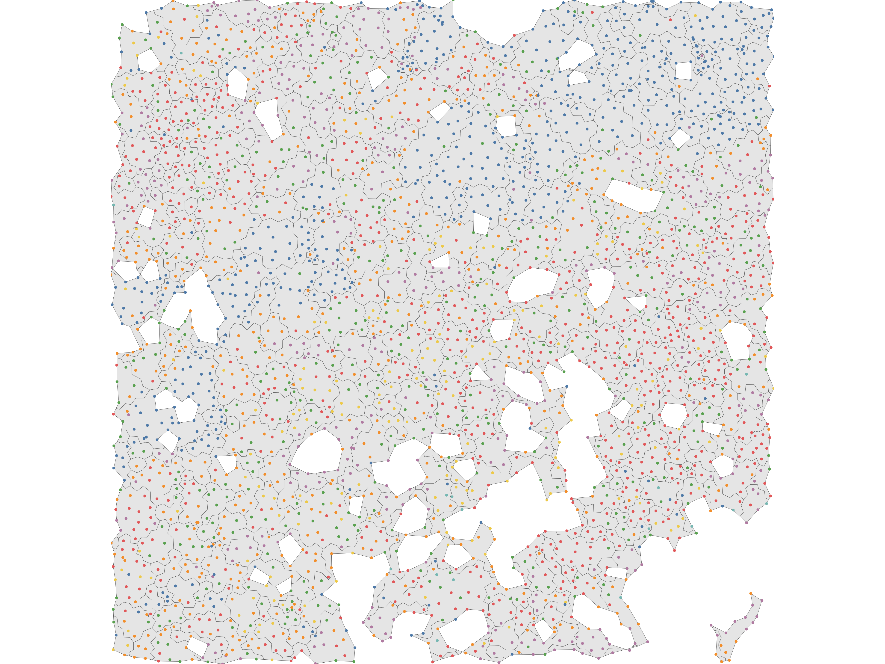
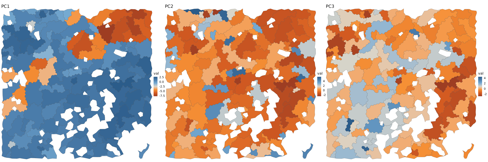

Walkthrough: Tessera Algorithm Step-by-Step
Source:vignettes/vignette_stepthrough.Rmd
vignette_stepthrough.RmdOverview
This notebook is a walkthrough of the steps of Tessera, for those who want to get more familiar with the components.
Parameters
verbose = TRUE
show_plots = TRUE
###### STEP 0 ######
npcs = 10
## Graph pruning
prune_thresh_quantile = 0.95
prune_min_cells = 10
###### STEP 1: GRADIENTS ######
smooth_distance = c('none', 'euclidean', 'projected', 'constant')[3]
smooth_similarity = c('none', 'euclidean', 'projected', 'constant')[3]
###### STEP 2: DMT ######
## ... no options
###### STEP 3: AGGREGATION ######
max_npts = 50
min_npts = 5
alpha = 1 ## 0.2 = conservative merging, 2 = liberal merging Data
Small sample MERFISH dataset from Chen et al:
https://www.biorxiv.org/content/10.1101/2023.04.04.535379v1.abstract
data('tessera_warmup')
counts = tessera_warmup$counts
meta_data = tessera_warmup$meta_data
meta_vars_include = c('type')
fig.size(8, 8)
ggplot() +
geom_point(data = meta_data, aes(X, Y, color = type)) +
theme_void() +
scale_color_tableau() +
coord_sf(expand = FALSE) +
NULL
Some coarse and fine grained cell types are predefined here, to help interpret the tiles we get below.
table(meta_data$type)
#>
#> Epithelial Fibroblast Lymphocyte Mast Myeloid Plasma Vascular
#> 634 588 829 18 491 206 411prepare
dmt = init_data(meta_data$X, meta_data$Y, counts, meta_data, meta_vars_include)
dmt = prune_graph(dmt, thresh_quantile = prune_thresh_quantile, mincells = prune_min_cells)
dmt = add_exterior_triangles(dmt)
fig.size(15, 15)
# fig.size(20, 20)
if (show_plots) {
ggplot() +
# ## big data
# geom_point(data = dmt$pts, aes(X, Y), shape = '.', alpha = .1) +
# geom_segment(data = dmt$edges[boundary == TRUE], aes(x = x0_pt, y = y0_pt, xend = x1_pt, yend = y1_pt), color = 'red', lwd = .2) +
## small data
geom_segment(data = dmt$edges, aes(x = x0_pt, y = y0_pt, xend = x1_pt, yend = y1_pt), color = 'black', lwd = .2) +
geom_segment(data = dmt$edges[boundary == TRUE], aes(x = x0_pt, y = y0_pt, xend = x1_pt, yend = y1_pt), color = 'red', lwd = .2) +
geom_point(data = dmt$pts, aes(X, Y), size = .5) +
theme_void(base_size = 20) +
coord_cartesian(expand = FALSE) +
labs(title = 'Pruned adjacency graph') +
NULL
}
pca
dmt$udv_cells = do_pca(dmt$counts, npcs)Step 1: compute gradients on all data structures
field = compute_gradients(dmt, smooth_distance, smooth_similarity)
field = compress_gradients_svd(field)
if (show_plots) {
len_plot_constant = .8
fig.size(15, 15)
# fig.size(20, 20)
ggplot() +
geom_point(data = dmt$pts, aes(X, Y), size = .5) +
geom_segment(data = dmt$edges[boundary == TRUE, ], aes(x = x0_pt, y = y0_pt, xend = x1_pt, yend = y1_pt), color = 'red') +
## Triangle Gradients
geom_segment(
data = data.table(dmt$tris, field$tris_svd),
aes(
x=X-len_plot_constant*(len_grad+len_ortho)*dx_ortho,
y=Y-len_plot_constant*(len_grad+len_ortho)*dy_ortho,
xend=X+len_plot_constant*(len_grad+len_ortho)*dx_ortho,
yend=Y+len_plot_constant*(len_grad+len_ortho)*dy_ortho
),
linewidth = .4, alpha = 1,
color = 'blue'
) +
theme_void() +
coord_fixed(expand = FALSE) +
NULL
}
Step 2: DMT
compute f
dmt = dmt_set_f(dmt, field)
if (show_plots) {
ntri = max(which(dmt$tris$external == FALSE))
i = Matrix::t(dmt$tri_to_pt[1:ntri, ])@i+1
plt_df = data.table(
X = dmt$pts$X[i],
Y = dmt$pts$Y[i],
f = rep(dmt$tris$f[1:ntri], each = 3)
)[
, id := rep(1:ntri, each = 3)
][]
fig.size(15, 15)
ggplot() +
geom_polygon(data = plt_df, aes(X, Y, group = id, fill = f, color = f)) +
theme_void() +
coord_fixed(expand = FALSE) +
scale_fill_viridis() +
scale_color_viridis() +
NULL
}
forests
dmt$prim = do_primary_forest(dmt)
dmt$dual = do_dual_forest(dmt)
if (show_plots) {
fig.size(15, 15)
ggplot() +
## primary forest
geom_point(data = dmt$tris[dmt$dual$maxima, ], aes(X, Y), color = 'blue', size = 2) +
geom_segment(data = dmt$dual$edges, aes(x=x0, y=y0, xend=x1, yend=y1), color = 'blue') +
## primary forest
geom_point(data = dmt$pts[dmt$prim$minima, ], aes(X, Y), color = 'red', size = 2) +
geom_segment(data = dmt$prim$edges, aes(x=x0, y=y0, xend=x1, yend=y1), color = 'red') +
theme_void() +
coord_cartesian(expand = FALSE) +
NULL
}
extract epaths
dmt$e_sep = dmt_get_separatrices(dmt)After DMT, we have a separatrix (in blue) and the primary forest connecting points (in red).
if (show_plots) {
fig.size(15, 15)
ggplot() +
geom_segment(data = dmt$edges[dmt$e_sep, ], aes(x = x0_tri, y = y0_tri, xend = x1_tri, yend = y1_tri), lwd = 1, color = 'blue') +
geom_segment(data = dmt$edges[boundary == TRUE], aes(x = x0_pt, y = y0_pt, xend = x1_pt, yend = y1_pt), color = 'blue', lwd = 1) +
## primary forest
geom_point(data = dmt$pts[dmt$prim$minima, ], aes(X, Y), color = 'red', size = 2) +
geom_segment(data = dmt$prim$edges, aes(x=x0, y=y0, xend=x1, yend=y1), color = 'red') +
theme_void() +
coord_cartesian(expand = FALSE) +
NULL
}
extract tiles
dmt = dmt_assign_tiles(dmt)
aggs = dmt_init_tiles(dmt)
if (show_plots) {
set.seed(2)
fig.size(15, 20)
ggplot() +
geom_sf(data = aggs$meta_data$shape) +
# geom_point(data = dmt$pts, aes(X, Y, color = factor(agg_id, sample(nrow(aggs$meta_data)))), size = 1) +
# scale_color_tableau() +
theme_void() +
coord_sf(expand = FALSE) +
# coord_cartesian(expand = FALSE) +
guides(color = 'none') +
NULL
}
if (show_plots) {
set.seed(2)
fig.size(15, 20)
ggplot() +
geom_sf(data = aggs$meta_data$shape) +
geom_point(data = dmt$pts, aes(X, Y, color = type)) +
theme_void() +
coord_sf(expand = FALSE) +
scale_color_tableau() +
guides(color = 'none') +
NULL
}
Step 3: Aggregation
Merge main
First, merge similar aggregates that are nearby.
aggs = init_scores(aggs, agg_mode=2, alpha=alpha, max_npts=max_npts)
aggs = merge_aggs(aggs, agg_mode=2, max_npts=max_npts)
dmt = update_dmt_aggid(dmt, aggs)
aggs = update_agg_shapes(dmt, aggs)Merge small outliers
Then go ahead and merge small clusters that are smaller than
aggs = init_scores(aggs, agg_mode=3, alpha=alpha, min_npts=min_npts)
aggs = merge_aggs(aggs, agg_mode=3, min_npts=min_npts)
dmt = update_dmt_aggid(dmt, aggs)
aggs = update_agg_shapes(dmt, aggs)Final tiles
fig.size(10, 30)
if (show_plots) {
purrr::map(1:3, function(i) {
ggplot(cbind(aggs$meta_data, val=aggs$pcs[, i])) +
geom_sf(aes(geometry = shape, fill = val)) +
theme_void(base_size = 16) +
coord_sf(expand = FALSE) +
scale_fill_gradient2_tableau() +
guides(color = 'none') +
labs(title = paste0('PC', i)) +
NULL
}) %>%
purrr::reduce(`|`)
}
Results
Aggregates
The primary output is the tiles. Each tile has a row in the meta_data table:
- npts denotes the number of cells in the tile.
head(aggs$meta_data)
#> id X Y npts shape area
#> <int> <num> <num> <num> <sfc_GEOMETRY> <num>
#> 1: 1 5575.126 10072.15 43 POLYGON ((5598.428 10051.98... 3028.5702
#> 2: 2 5551.504 10104.73 35 POLYGON ((5572.969 10116.07... 2320.2439
#> 3: 3 5577.735 10114.87 8 POLYGON ((5572.969 10116.07... 651.2121
#> 4: 4 5565.044 10019.62 41 POLYGON ((5614.379 10006.3,... 2292.7048
#> 5: 5 5534.221 10048.70 7 POLYGON ((5537.904 10040.62... 387.4860
#> 6: 6 5515.949 10052.62 33 POLYGON ((5513.932 10008.66... 2012.1687
#> perimeter
#> <num>
#> 1: 393.79103
#> 2: 270.48266
#> 3: 139.60497
#> 4: 317.27844
#> 5: 87.17964
#> 6: 252.01537We also have pooled gene counts, for differential gene expression analysis.
aggs$counts[1:5, 1:5]
#> 5 x 5 sparse Matrix of class "dgCMatrix"
#> 1 2 3 4 5
#> ACE 3 2 1 1 .
#> ACKR1 . 1 . . .
#> ACKR2 1 . . . .
#> ACKR3 . 1 . 1 .
#> ACKR4 . . . . .And we have PCA embeddings for the tiles.
head(aggs$pcs)
#> PC1 PC2 PC3 PC4 PC5 PC6
#> [1,] 0.4825579 0.8655010 0.7482536 -1.7295154 0.72493548 -0.09225811
#> [2,] 1.2049713 -0.4606094 1.2644548 -0.5915905 0.88324376 -0.05540783
#> [3,] 1.3895474 -1.5392132 4.4464253 1.3297266 1.26997762 -0.95557892
#> [4,] 1.5045535 0.5159752 1.6467592 -0.7636852 0.52567053 -0.32880955
#> [5,] -1.8997925 0.2528658 0.1246703 -0.8315790 -0.05534974 -0.52082111
#> [6,] 1.3016723 -0.3290007 0.4484454 -1.0768298 0.59484589 0.70384283
#> PC7 PC8 PC9 PC10
#> [1,] -0.7315589 -0.6213994 -0.2676081 -0.07145101
#> [2,] -0.9391629 -0.5750840 -0.1579376 0.16274963
#> [3,] -0.3429736 -0.1472482 1.1103697 0.34060965
#> [4,] 0.2752555 -0.4348756 0.2355197 0.28518495
#> [5,] -2.5338185 1.1466404 1.1236109 -0.40210877
#> [6,] -0.8923629 -0.2867486 0.2800958 1.22910049The rest of the fields are internal to the algorithm and can be ignored.
Points
We also keep information about the cells in dmt. Most of
the fields are duplicates of the inputs and some intermediate
results.
names(dmt)
#> [1] "pts" "tris" "edges" "tri_to_pt" "counts" "udv_cells"
#> [7] "prim" "dual" "e_sep"The important fields to keep for further analyses are:
- ORIG_ID: the index of the cell in the input data. Some cells get filtered out as outliers, so not all input cells get assigned to an aggregate.
- agg_id: the index of the tile in the
aggsdata structures above.
head(dmt$pts[, .(ORIG_ID, agg_id)])
#> ORIG_ID agg_id
#> <int> <int>
#> 1: 1 1
#> 2: 2 1
#> 3: 3 2
#> 4: 4 3
#> 5: 5 4
#> 6: 6 4Session Info
sessionInfo()
#> R version 4.5.1 (2025-06-13)
#> Platform: x86_64-pc-linux-gnu
#> Running under: Ubuntu 24.04.2 LTS
#>
#> Matrix products: default
#> BLAS: /usr/lib/x86_64-linux-gnu/openblas-pthread/libblas.so.3
#> LAPACK: /usr/lib/x86_64-linux-gnu/openblas-pthread/libopenblasp-r0.3.26.so; LAPACK version 3.12.0
#>
#> locale:
#> [1] LC_CTYPE=C.UTF-8 LC_NUMERIC=C LC_TIME=C.UTF-8
#> [4] LC_COLLATE=C.UTF-8 LC_MONETARY=C.UTF-8 LC_MESSAGES=C.UTF-8
#> [7] LC_PAPER=C.UTF-8 LC_NAME=C LC_ADDRESS=C
#> [10] LC_TELEPHONE=C LC_MEASUREMENT=C.UTF-8 LC_IDENTIFICATION=C
#>
#> time zone: UTC
#> tzcode source: system (glibc)
#>
#> attached base packages:
#> [1] stats graphics grDevices utils datasets methods base
#>
#> other attached packages:
#> [1] patchwork_1.3.1 viridis_0.6.5 viridisLite_0.4.2 ggthemes_5.1.0
#> [5] ggplot2_3.5.2 tessera_0.1.5 Rcpp_1.1.0 data.table_1.17.8
#>
#> loaded via a namespace (and not attached):
#> [1] gtable_0.3.6 xfun_0.52 bslib_0.9.0 htmlwidgets_1.6.4
#> [5] lattice_0.22-7 vctrs_0.6.5 tools_4.5.1 generics_0.1.4
#> [9] parallel_4.5.1 tibble_3.3.0 proxy_0.4-27 pkgconfig_2.0.3
#> [13] Matrix_1.7-3 KernSmooth_2.23-26 RColorBrewer_1.1-3 desc_1.4.3
#> [17] lifecycle_1.0.4 compiler_4.5.1 farver_2.1.2 stringr_1.5.1
#> [21] textshaping_1.0.1 codetools_0.2-20 htmltools_0.5.8.1 class_7.3-23
#> [25] sass_0.4.10 yaml_2.3.10 pkgdown_2.1.3 pillar_1.11.0
#> [29] furrr_0.3.1 jquerylib_0.1.4 classInt_0.4-11 cachem_1.1.0
#> [33] abind_1.4-8 mclust_6.1.1 RSpectra_0.16-2 parallelly_1.45.0
#> [37] tidyselect_1.2.1 digest_0.6.37 stringi_1.8.7 future_1.58.0
#> [41] sf_1.0-21 dplyr_1.1.4 purrr_1.1.0 listenv_0.9.1
#> [45] labeling_0.4.3 magic_1.6-1 fastmap_1.2.0 grid_4.5.1
#> [49] cli_3.6.5 magrittr_2.0.3 e1071_1.7-16 withr_3.0.2
#> [53] scales_1.4.0 rmarkdown_2.29 globals_0.18.0 igraph_2.1.4
#> [57] gridExtra_2.3 ragg_1.4.0 evaluate_1.0.4 knitr_1.50
#> [61] geometry_0.5.2 rlang_1.1.6 glue_1.8.0 DBI_1.2.3
#> [65] jsonlite_2.0.0 R6_2.6.1 systemfonts_1.2.3 fs_1.6.6
#> [69] units_0.8-7